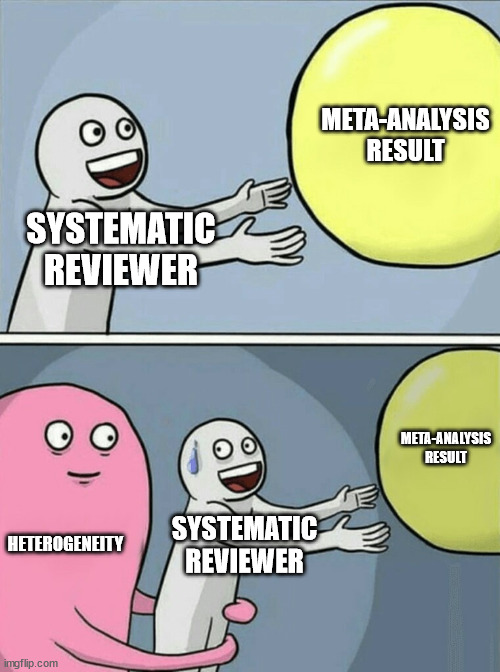

This section will cover methods of combining measures of effect together to calculate an overall average or pooled meta-analysis estimate. When conducting a random-effects meta-analysis, it is important to quantify and explore the between-study heterogeneity, or differences in the effect sizes across studies that are due to study differences compared to sampling error. We display the results of a meta-analysis using a forest plot figure to facilitate interpretation and visualization of effects, variation, and study weights. We will also briefly consider methods for synthesis of qualitative research.

7.1 Pooling Measures of Effect
In the previous chapter, we reviewed the basics of meta-analysis, including differences between fixed-effect and random-effects models. We will now cover procedures for conducting meta-analysis for different types of outcome data. All examples will use the meta package in R.
The most common method of pooling measures of effect is called the generic inverse-variance method, the formula for which was provided in Chapter 6. In this method, studies are weighted by the inverse of their precision. This method is used for continuous data (e.g., mean difference, SMD), and can also be used for dichotomous data. It is also the method used when conducting meta-analysis on pre-calculated measures of effect (e.g., odds ratios, risk ratios).
Change-From-Baseline Data
Analyses of an intervention based on a change from baseline can be more efficient, increasing precision of estimates. They are ideally analyzed by including the baseline measurement as a covariate in a regression analysis or ANCOVA. In meta-analysis, change-from-baseline scores and post-intervention values can be combined in the same analysis if using a raw MD outcome. However, they should not be combined when using a SMD outcome, as the standard deviations are not comparable.
When analyzing dichotomous raw data (e.g., number of events and sample size in each comparison group), there are alternative approaches available. The most common of these is the Mantel-Haenszel method. This method is preferred for dichotomous data, especially when the event is rare or when the sample size is small. The Peto odds ratio method is another approach, but it has more limitations and can only be used to calculate odds ratios.
One issue for dichotomous outcomes is that there may be zero events in one or both groups. In this case, the traditional, and often default approach in meta-analysis software, is to replace zero values with 0.5 (continuity correction). However, this correction is only required when using the generic inverse-variance approach; it should not be used when using the other methods.
In the meta package, the following functions can be used for meta-analysis of different types of data inputs:
metagen for pre-calculated measures of effect
metacont for continuous data
metabin for dichotomous data
metaprop for prevalence (proportion) data
metainc for incidence rate ratio or incidence rate difference data
metarate for incidence data in a single group
metacor for correlation coefficients
Note that we will not cover meta-analysis of all of these data types. If interested to see examples of others, you can visit the online book Doing Meta-Analysis in R.
Continuous Data Meta-Analysis Example
To illustrate how to conduct a meta-analysis using continuous data, we will examine part of the dataset from a systematic review of music interventions to improve various health outcomes in people with cancer (Bradt et al. 2021). Specifically, we will examine 17 studies from that review that evaluated music interventions plus standard care compared to standard care alone in adults to improve anxiety. Anxiety was measured in all studies using the Spielberger State Anxiety Index (STAI) scale, with lower scores representing lower anxiety.
We can see that each study reported the mean anxiety score, SD, and sample size in each comparison group. Because all studies measured the outcome on the same scale, we can calculate a raw mean difference (MD). For continuous data, we will use the metacont function.
Based on this analysis, we can see that the anxiety scores were lower among participants that received music interventions in addition to standard care vs. standard care alone.
If we wanted to change any settings, we can use the update function to update our analysis. For example, we could run an updated analysis to compare how the results might change with a different method of calculating \(\tau^2\).
We obtain slightly different results when using the alternative method of calculating \(\tau^2\). How do the results change if we instead compare to the DerSimonian-Laird (DL) method?
Dichotomous Data Meta-Analysis Example
To illustrate how to conduct a meta-analysis using dichotomous data, we will examine a dataset of 136 studies used in a meta-analysis of the effectiveness of nicotine replacement therapy vs. control for smoking cessation (Hartmannâ€Boyce et al. 2018), as prepared by White et al. in the metadat repository.
As can been seen above, the dataset contains information from each study on the number of participants in each group that continued to abstain from smoking at 6+ months of follow-up. Also included is a column that specifies the type of treatment received. Since the data are dichotomous and all include raw data, we can calculate an measure of effect using the Mantel-Haenszel method. We will use the metabin function, but first we will subset our data to only conduct the meta-analysis on studies that investigated the nicotine patch as an intervention.
In this analysis, we can see that participants in the intervention group were more likely to continue to abstain from smoking at follow-up compared to those in the control group.
How do the results change, if at all, if we instead do not apply the Hartung-Knapp adjustment?
7.1.1 Prevalence and Incidence Data
Meta-analysis of prevalence and incidence data uses a slightly different approach than continuous and dichotomous data. The recommended approach for synthesizing such data is to use a generalized linear mixed-effects model (GLMM)(Schwarzer et al. 2019). Prevalence data should be logit transformed prior to meta-analysis, while incidence data should be log transformed (this is done automatically in the meta package). For prevalence data, the GLMM approach fits an intercept-only logistic regression to the data, with a random-effect to account for the between-study variation. A Poisson GLMM model is used for incidence data.
Using the GLMM approach has some limitations. It is not possible to obtain individual study weights using this method. Additionally, there is only one method to calculate \(\tau^2\), the maximum-likelihood (ML) estimator, and there will be no confidence internals for \(\tau^2\). In case those details are needed, the inverse-variance approach can be used with the arcsine or logit transformation for prevalence data, or the log transformation for incidence data.
Prevalence Meta-Analysis Example
An example is shown below of a meta-analysis of the prevalence of selected outcomes from a systematic review of the knowledge, behaviours, and training of restaurant and food service personnel toward food allergies and Celiac disease (Young and Thaivalappil 2018).
We can see that some article and study characteristics are also included in this dataset. For these data, we will subset the training outcome only for illustration purposes. This outcome shows the proportion of participants (i.e., restaurant and food service staff) in each study that reported receiving training about food allergies.
# Note that this model does not work in webr, and must be run in R/RStudio. library(meta)
Loading required package: metadat
Loading 'meta' package (version 8.1-0).
Type 'help(meta)' for a brief overview.
Young_2018_meta <-metaprop(event = n.positive, n = n.total,studylab ="author.year", subset = outcome.category =="Training status/policies",data = Young_2018,method ="GLMM",sm ="PLOGIT",random =TRUE,common =FALSE,method.random.ci ="HK", title ="Food Allergy Training Prevalence")summary(Young_2018_meta)
Review: Food Allergy Training Prevalence
proportion 95%-CI
79 0.4200 [0.3220; 0.5229]
80 0.3333 [0.2374; 0.4405]
81 0.3057 [0.2416; 0.3759]
82 0.1500 [0.0571; 0.2984]
83 0.4933 [0.3758; 0.6114]
84 0.7909 [0.7030; 0.8626]
85 0.3668 [0.3043; 0.4328]
86 0.4085 [0.3701; 0.4477]
87 0.1709 [0.1331; 0.2145]
88 0.4557 [0.3998; 0.5124]
89 0.2500 [0.1766; 0.3357]
90 0.2609 [0.1834; 0.3510]
Number of studies: k = 12
Number of observations: o = 2382
Number of events: e = 871
proportion 95%-CI
Random effects model 0.3587 [0.2578; 0.4739]
Quantifying heterogeneity (with 95%-CIs):
tau^2 = 0.5203; tau = 0.7213; I^2 = 93.2% [89.9%; 95.4%]; H = 3.84 [3.15; 4.67]
Test of heterogeneity:
Q d.f. p-value
Wald 161.87 11 < 0.0001
LRT 195.78 11 < 0.0001
Details of meta-analysis methods:
- Random intercept logistic regression model
- Maximum-likelihood estimator for tau^2
- Calculation of I^2 based on Q
- Random effects confidence interval based on t-distribution (df = 11)
- Logit transformation
- Clopper-Pearson confidence interval for individual studies
We can see the pooled prevalence value is ~36%, with a 95% CI of 26-47%.
7.2 Assessing Heterogeneity
Heterogeneity refers to differences between studies that is beyond what we would expect from chance (or random error) alone. It can be due to differences in how interventions (exposures) and outcomes were defined, implemented, and measured, differences in the characteristics of the populations assessed, or other factors (e.g., differences in study methods, context, and bias).
There is a \(\chi2\) statistical test for heterogeneity, called Cochran’s Q, that has been traditionally used and is included in the the R meta results output. This test evaluates whether this is more variation than would be expected by sampling error alone. However, this test has lower power when the number of studies is small. Additionally, its use is controversial, as some argue that since there are always differences expected between studies, some heterogeneity will always be present.
For this reason, the \(I^2\) statistic was developed to quantify heterogeneity (J. P. T. Higgins et al. 2003). The formula, based on Cochran’s \(Q\), is shown below, with \(N\) referring to the number of studies in the analysis:
\[
I^2 = \frac{Q-(N-1)}{Q}
\]
\(I^2\) refers to the percentage of variation in measures of effect across studies that is due to heterogeneity rather than sampling error. While thresholds are often used in practice, these are discouraged. Instead, the amount of heterogeneity that is important depends on the context (e.g., magnitude and direction of effects, strength of evidence for heterogeneity). In general, \(I^2\) values of 0-40% might not be important, values of 75-100% usually indicate considerable heterogeneity, while values in 30-60% and 50-90% might indicate moderate to substantial heterogeneity (J. Higgins et al. 2022).
However, because \(I^2\) is a relative measure, it should not be the only measure of heterogeneity reported. We can also examine \(\tau\) and its 95% CI, which represents the estimated SD of the true effects across studies (it is on the same scale as the measure of effect used in the analysis).
Prediction intervals (PIs) are recommended to be included alongside other estimates of heterogeneity. A 95% PI estimates the range of values the measure of effect would be expected to fall within in 95% of similar studies that might be conducted in the future. In cases of heterogeneity, the PI covers a wider range of values than a CI. In R meta, we can add a PI to our output by adding the argument prediction = TRUE to the function input options.
We will explore in the next session Chapter 8 how to investigate different causes of heterogeneity using subgroup analysis and meta-regression.
Heterogeneity Example
We will go back to our first meta-analysis example that examined the effect of music interventions plus standard care vs. standard care alone to reduce anxiety levels among people with cancer (Bradt et al. 2021). We will update the analysis to include a prediction interval (PI), then interpret the heterogeneity.
We can see in the results that the \(Q\) test for heterogeneity is significant, and the \(I^2\) value is also very high at ~93% (95% CI: 90.9-95.3%). While the pooled measure of effect (MD) has a 95% CI that excludes the null, suggesting a consistent positive effect of the music intervention, the PI crosses above zero. This indicates that we cannot rule out that the intervention might have no effect or a negative effect in future studies.
7.3 Forest Plots
Forest plots are the most common way to visualize meta-analysis results. They show the measure of effect estimate, confidence interval, and weight of each study, and the pooled or average estimate at the bottom. They can also include a prediction interval.
Below we will create a forest plot from the meta-analysis of music interventions on reducing anxiety levels in people with cancer, from the earlier example (Bradt et al. 2021). Using the meta package, we can generate a forest plot for our saved meta-analysis results using the forest function.
We can clean up the display of this plot by removing the data on the left side of the plot, and also adding in a prediction interval at the bottom. Other customization options can be made as needed.
Meta-Analysis Exercise
We will load data from the Young et al. (2019) systematic review and meta-analysis of the effectiveness of food handler training and education interventions. The dataset can be loaded and visualized as per below:
We can see that there are 214 unique outcomes, with multiple outcomes reported in many studies. We will first conduct a meta-analysis of a subset of data that only examines RCTs and behaviour outcomes:
Examine and interpret the results.
How many studies and unique outcomes were included?
What does the overall evidence say about the intervention?
How much heterogeneity is present? Is it significantly different than zero?
How does the result change if you use a different method of calculating \(\tau^2\)?
Now create a customized forest plot to visualize the results and include the prediction interval. How would you interpret the interval?
Now conduct a meta-analysis for the subset of non-randomized studies and the inspection scores outcome. Answer the same questions above for this analysis.
Many of the systematic review methods discussed in the course can similarly be applied to qualitative syntheses, with some adaptations. The analysis, or synthesis, stage in particular is very different (Barnett-Page and Thomas 2009). The data that is synthesized in such reviews can vary depending on the review objectives and types of evidence included, but is typically themes supported by participant quotes from qualitative research studies (e.g., focus groups, grounded theory studies, etc.) or mixed-method studies. Sometimes, such reviews might also include data from review articles or policy documents to be synthesized into a narrative synthesis, which is common for reviews that incorporate multiple types and sources of evidence.
One of the more common syntheses approaches for qualitative reviews is called thematic synthesis(Thomas and Harden 2008). Thomas and Harden (2008) describe a three-step process of conducting this analysis, which consists of:
Line-by-line coding of the findings (e.g., participant quotes and themes) of primary studies
Organization and grouping of the codes into related areas, which is used to develop descriptive themes
Development of analytical themes, which aim to go beyond the findings of the original studies and produce overarching themes.
The latter step requires some judgement of reviewers and involves making inferences about the mechanisms behind the descriptive themes.
There are other approaches to qualitative synthesis as well, including:
Meta-aggregation: uses an approach similar to thematic synthesis that aims to generate recommendation statements for policy-makers and practitioners.
Framework synthesis: uses a theory or model to guide analysis and interpretation of findings
Meta-ethnography: a theory-building approach to synthesis
To what extent did their search differ from that of a standard systematic review?
What was their process for assessing methodological limitations of the studies?
How did they conduct their synthesis?
How did they report their synthesis results?
Barnett-Page, Elaine, and James Thomas. 2009. “Methods for the Synthesis of Qualitative Research: A Critical Review.â€BMC Medical Research Methodology 9 (1): 59. http://www.biomedcentral.com/1471-2288/9/59.
Bradt, Joke, Cheryl Dileo, Katherine Myers-Coffman, and Jacelyn Biondo. 2021. “Music Interventions for Improving Psychological and Physical Outcomes in People with Cancer.â€Cochrane Database of Systematic Reviews, no. 10. https://doi.org/10.1002/14651858.CD006911.pub4.
Hartmannâ€Boyce, Jamie, Samantha C. Chepkin, Weiyu Ye, Chris Bullen, and Tim Lancaster. 2018. “Nicotine Replacement Therapy Versus Control for Smoking Cessation.â€Cochrane Database of Systematic Reviews, no. 5. https://doi.org/10.1002/14651858.CD000146.pub5.
Higgins, J P T, S G Thompson, J J Deeks, and D G Altman. 2003. “Measuring Inconsistency in Meta-Analyses.â€BMJ (Clinical Research Ed.) 327 (7414): 557–60. https://doi.org/10.1136/bmj.327.7414.557.
Higgins, JPT, J Thomas, J Chandler, M Cumpston, T Li, MJ Page, and VA Welch, eds. 2022. Cochrane Handbook for Systematic Reviews of Interventions. Cochrane. www.training.cochrane.org/handbook.
Lockwood, Craig, Zachary Munn, and Kylie Porritt. 2015. “Qualitative Research Synthesis: Methodological Guidance for Systematic Reviewers Utilizing Meta-Aggregation.â€JBI Evidence Implementation 13 (3): 179. https://doi.org/10.1097/XEB.0000000000000062.
Rawlings, G. H., R. K. Williams, D. J. Clarke, C. English, C. Fitzsimons, I. Holloway, R. Lawton, G. Mead, A. Patel, and A. Forster. 2019. “Exploring Adults’ Experiences of Sedentary Behaviour and Participation in Non-Workplace Interventions Designed to Reduce Sedentary Behaviour: A Thematic Synthesis of Qualitative Studies.â€BMC Public Health 19 (1): 1099. https://doi.org/10.1186/s12889-019-7365-1.
Schwarzer, Guido, Hiam Chemaitelly, Laith J. Abu-Raddad, and Gerta Rücker. 2019. “Seriously Misleading Results Using Inverse of Freeman-Tukey Double Arcsine Transformation in Meta-Analysis of Single Proportions.â€Research Synthesis Methods 10 (3): 476–83. https://doi.org/10.1002/jrsm.1348.
Thomas, J, and A Harden. 2008. “Methods for the Thematic Synthesis of Qualitative Research in Systematic Reviews.â€BMC Medical Research Methodology 8 (July): 45. https://doi.org/10.1186/1471-2288-8-45.
Young, Ian, Judy Greig, Barbara J. Wilhelm, and Lisa A. Waddell. 2019. “Effectiveness of Food Handler Training and Education Interventions: A Systematic Review and Meta-Analysis.â€Journal of Food Protection 82 (10): 1714–28. https://doi.org/10.4315/0362-028X.JFP-19-108.
Young, Ian, and Abhinand Thaivalappil. 2018. “A Systematic Review and Meta-Regression of the Knowledge, Practices, and Training of Restaurant and Food Service Personnel Toward Food Allergies and Celiac Disease.†Edited by Louise Emilsson. PLOS ONE 13 (9): e0203496. https://doi.org/10.1371/journal.pone.0203496.